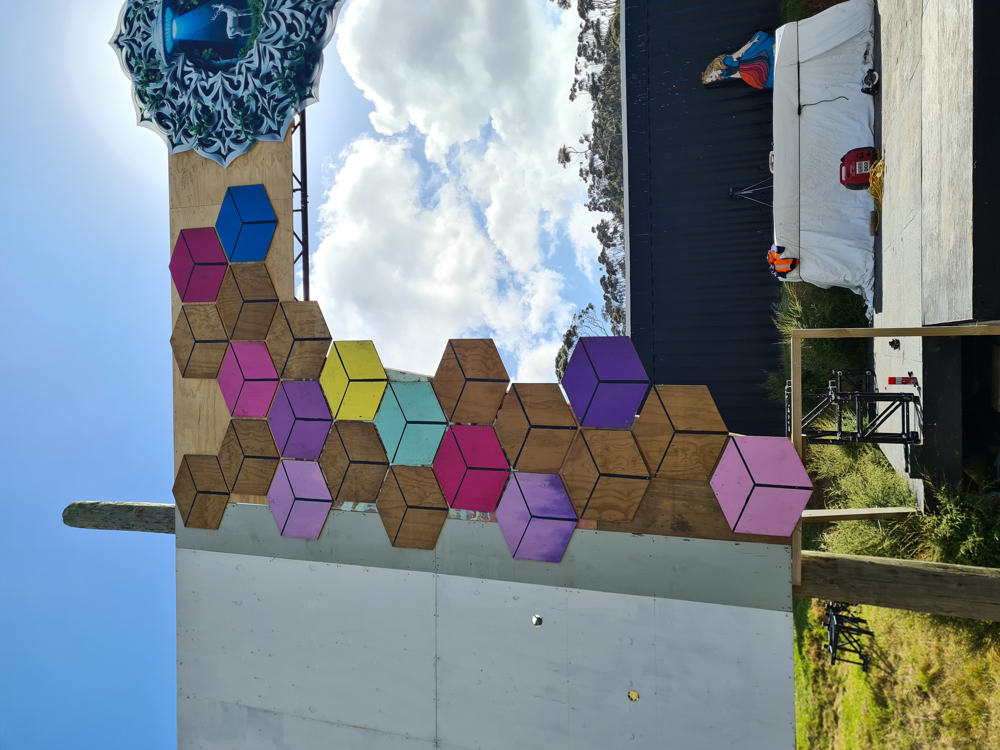
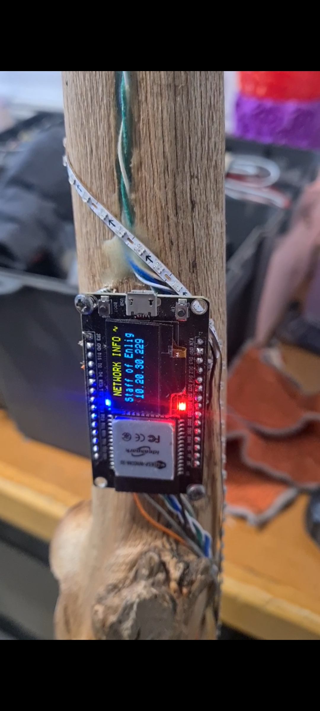
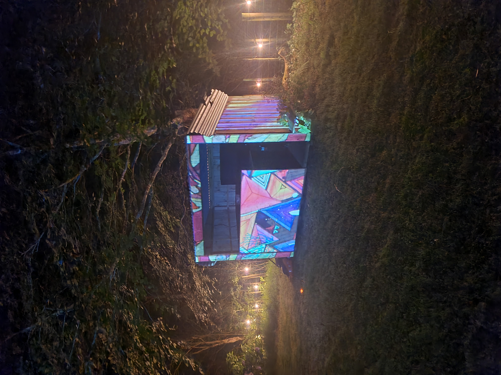
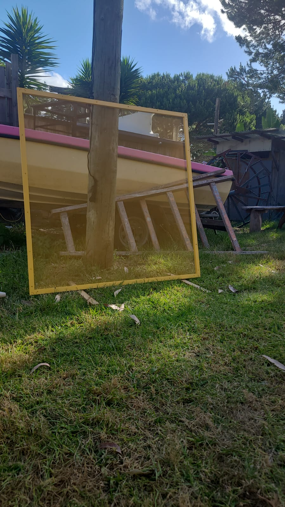

Pillar 01 — Multi-Format Artist
Art as a Tool for Consciousness
Interactive art for live festival sites — installations, LEDs, and projection mapping, solved fresh for every stage. Also: web development — the full stack, from static sites to interactive builds.
Festival Installations

Original interactive installations built for the scale and chaos of a live festival site — designed and built fresh for each event, not reused templates.
Interactive Art / Micro-Electronics

Pieces that respond — LED arrays, sensors, and microcontrollers that react to people and sound, turning a static object into something alive.
Projection Mapping

Mapping light onto structures and surfaces to transform a stage or installation into a canvas. Art and lighting working as one system.
Stage Curation & DMX

Core member of touring festival art-teams, curating stages and programming DMX lighting. Goal-oriented, supportive crew leadership through build weeks.
Web Development
Static sites, interactive builds, and full-stack web development — designed and built with the same care as the physical work. This site is a working example.
// =====================================================================
// Theme toggle — persist light/dark preference across pages
// =====================================================================
(function() {
const btn = document.getElementById('theme-toggle');
const root = document.documentElement;
const key = 'roadhouse.theme';
function get() { try { return localStorage.getItem(key) || 'system'; } catch { return 'system'; } }
function set(m) { try { localStorage.setItem(key, m); } catch {} }
function apply(mode) { mode === 'light' || mode === 'dark' ? root.setAttribute('data-theme', mode) : root.removeAttribute('data-theme'); }
function cur() { return root.getAttribute('data-theme') || (window.matchMedia('(prefers-color-scheme: dark)').matches ? 'dark' : 'light'); }
function updateLabel() {
const m = cur(); btn.setAttribute('aria-label', m==='dark' ? 'Switch to light theme' : 'Switch to dark theme');
btn.setAttribute('aria-pressed', String(m==='dark'));
}
btn.addEventListener('click', () => { const n = cur()==='dark' ? 'light' : 'dark'; apply(n); set(n); updateLabel(); });
const init = get(); if (init==='light'||init==='dark') apply(init); updateLabel();
})();
// =====================================================================
// Stream / page-specific scripts
// =====================================================================